Alojour booth
Gateway of the Guests of God.
An exhibition booth for a pilgrim transport company at the Hajj exhibition: a 51 m² L-shaped corner stand with a walnut tower, pointed arches, a majlis under three hanging Tawaf rings, a reception counter and a hospitality bar.
- Client
- Alojour for transporting pilgrims
- Role
- Concept, 3D design and rendering
- Scope
- Booth design, renders, plan with dimensions
- Tools
- Blender, Cycles, ChatGPT
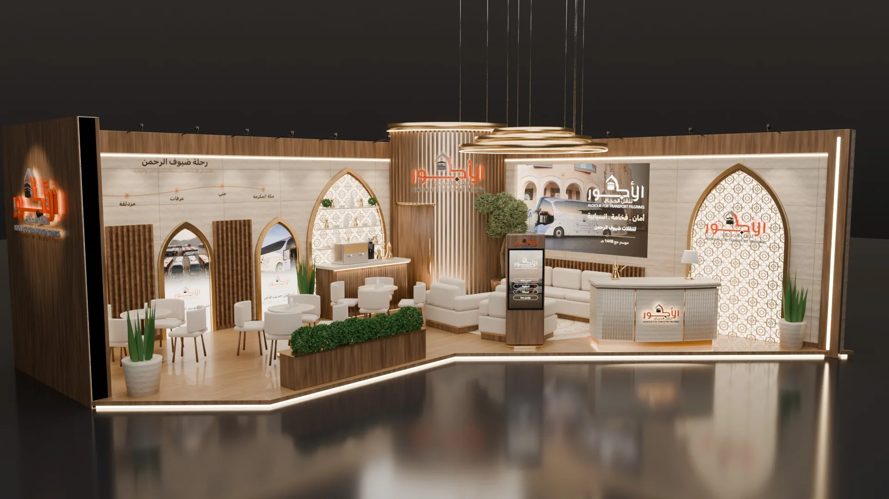
Gateway of the Guests of God.
- The objective
- Present a pilgrim transport company at the Hajj exhibition on a tight 51 m² corner plot.
- The idea
- A 4 m corner tower as the landmark, pointed arches for the Hajj journey, and three glowing Tawaf rings over the majlis.
- Visual direction
- Beige travertine, walnut slats, brass and warm 3000K light: calm, hospitable and premium.
Step by step
From the first sketch to the final file.
Step 01
Sketch and plan
Pen and paper
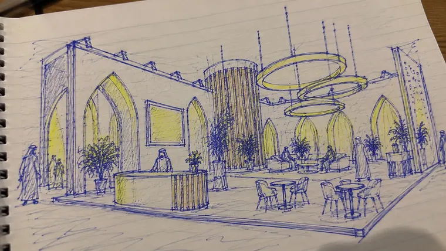
Concept sketch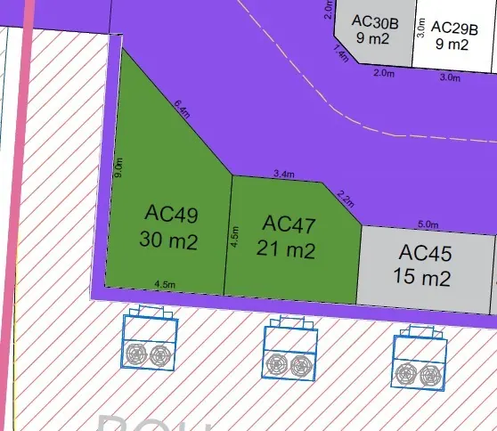
Site planAn L-shaped stand sketched over the two plots, with the corner kept for a landmark tower.
Step 02
Outline
Blender
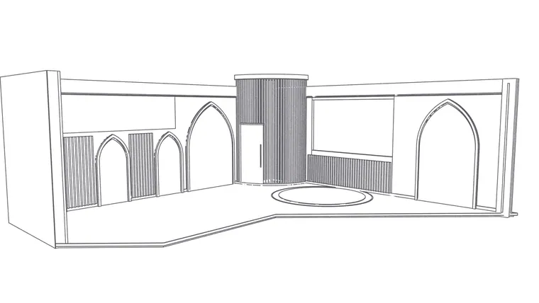
Outline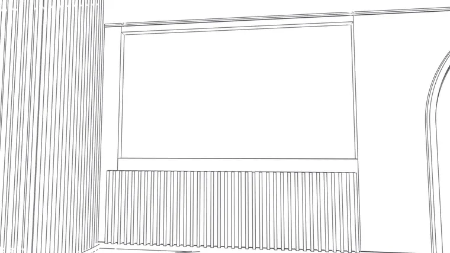
InteriorWalls, arches and the 4 m tower blocked out in Blender to the real plot dimensions.
Step 03
Place the models
Blender
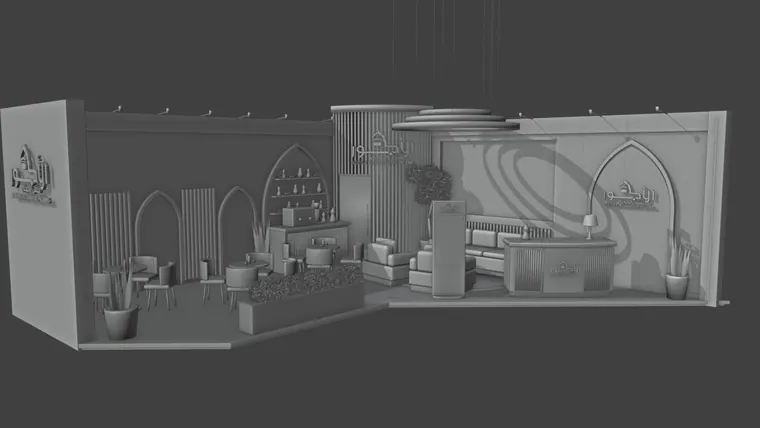
Models placed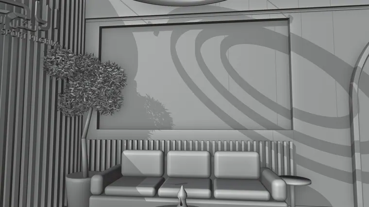
InteriorReception, majlis, hospitality bar, cafe tables and the hanging rings placed.
Step 04
Render
Blender, Cycles
 Final render
Final render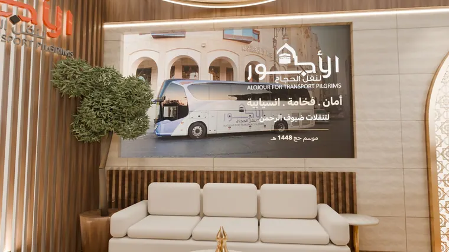
InteriorTravertine, walnut, brass and warm 3000K light, rendered in Cycles for approval.
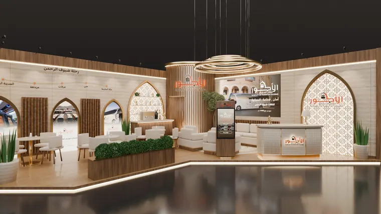
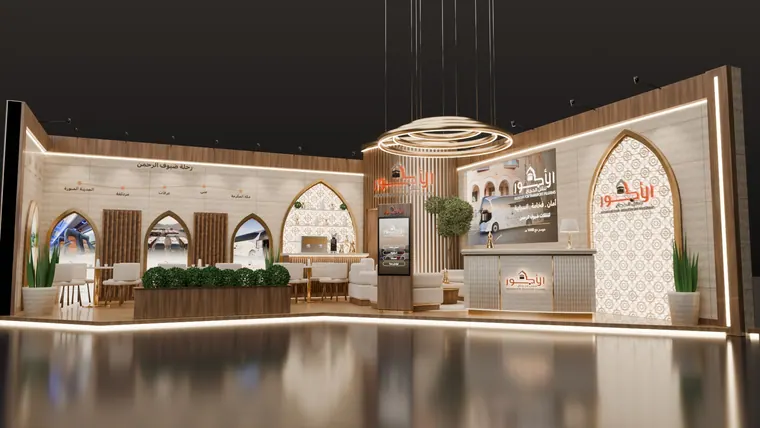
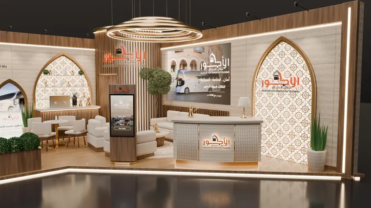
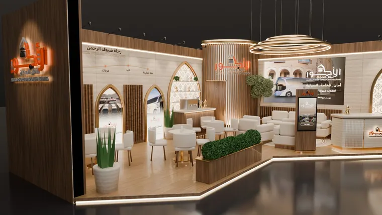

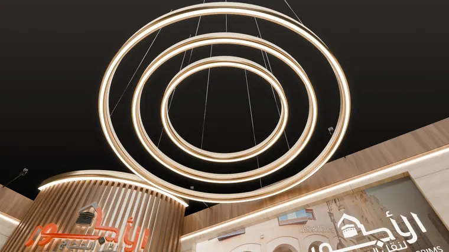
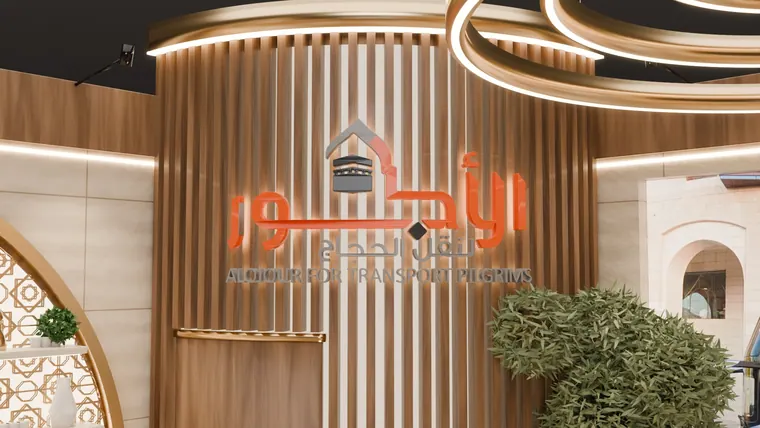
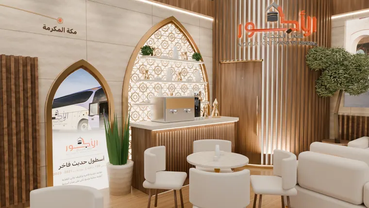
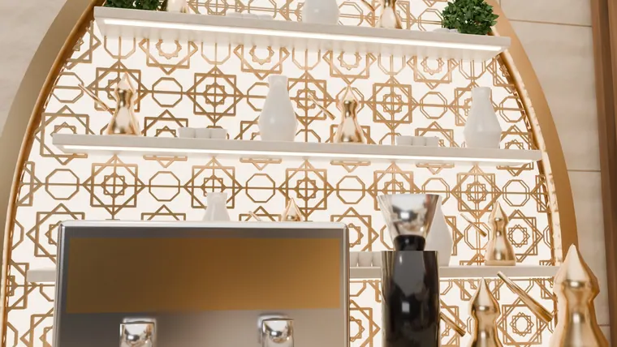
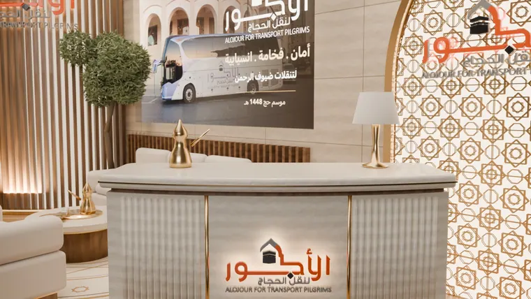
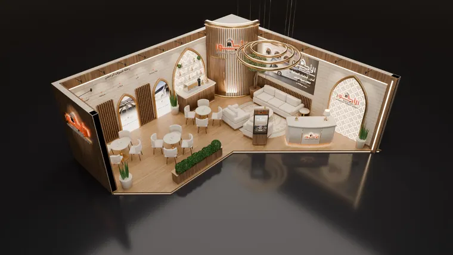
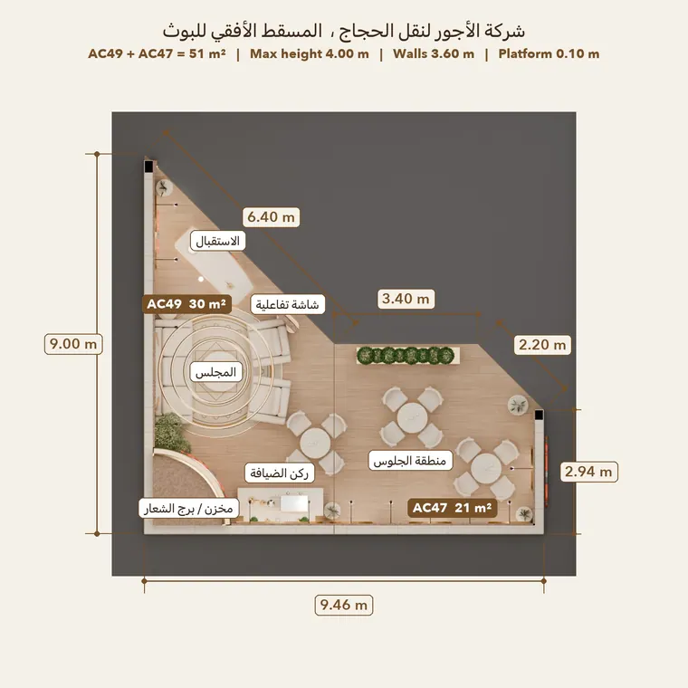
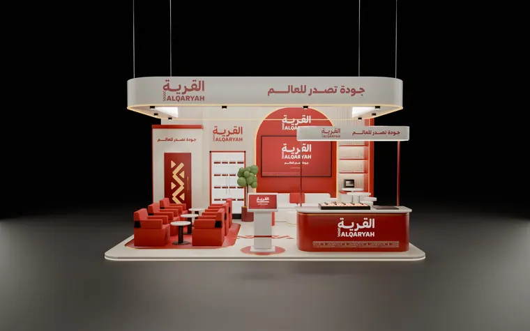